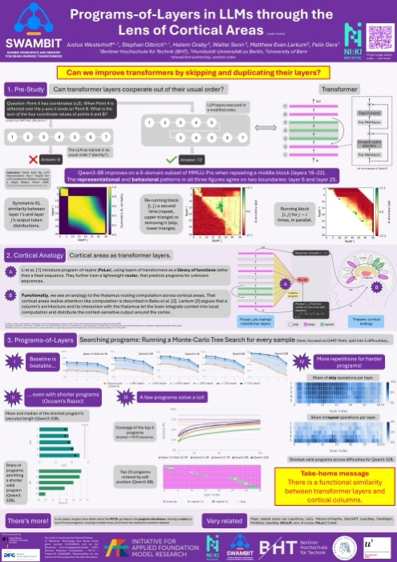
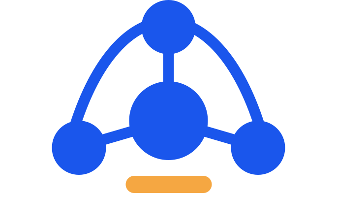
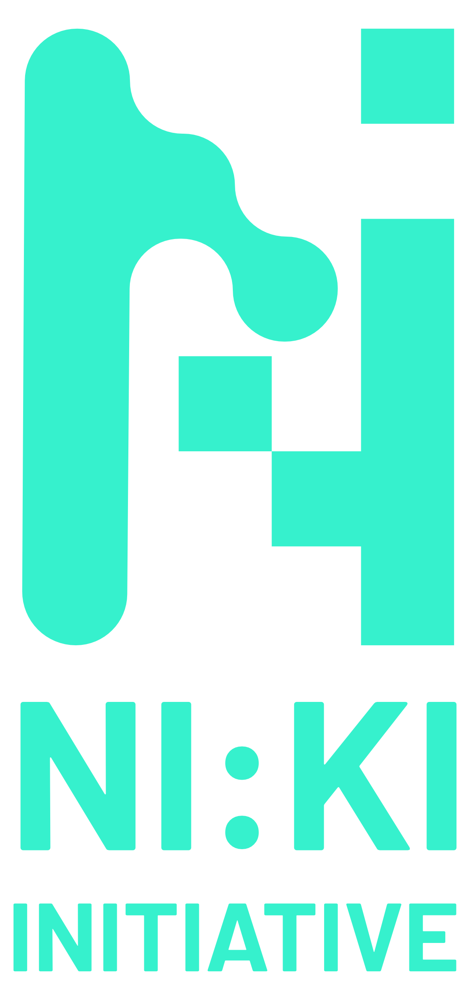
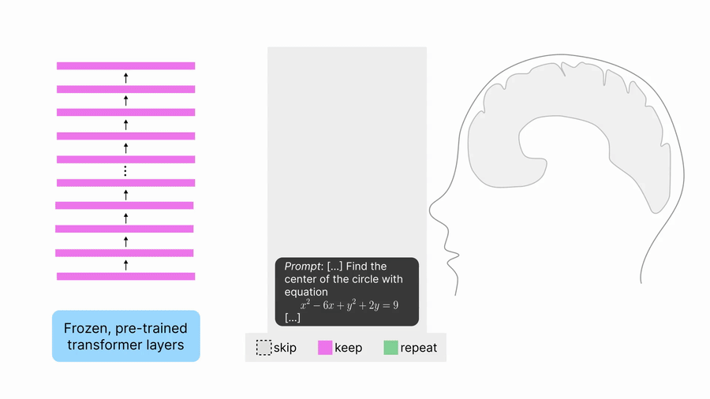
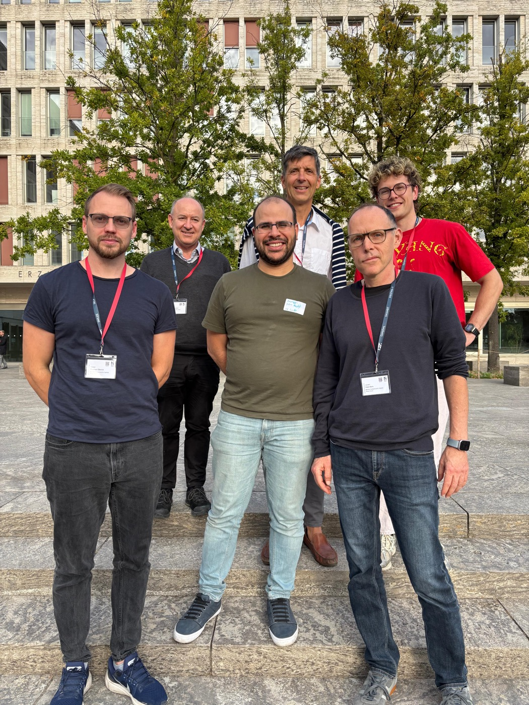
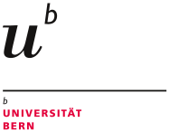

Poster
29 SEP2026
Poster at Bernstein Conference 2026
The RE-PoLar poster, presented at Bernstein Conference 2026.


Shared Workspace And Memory
for Brain-Inspired Transformers

initiativeThe RE-PoLar poster, presented at Bernstein Conference 2026.

Reproduction and extension of PoLar, with code and an interactive explorer.

SWAMBIT introduced to the initiative, plus a team picture.

The RE-PoLar poster, presented at the NEAT workshop.
SWAMBIT starts as one of the 11 NI:KI pilot projects.
Tap a card to open it.
SWAMBIT builds AI the way the brain is organised: many small, sparsely active specialists instead of one dense monolith, coordinated through a shared workspace and enriched by a hippocampus-like memory. The goal is models that are more efficient and easier to extend.

arXiv preprint arXiv:2609.31360, 2026 · *shared first authorship, random order
@article{westerhoff2026repolar,
title={Programs-of-Layers in LLMs through the Lens of Cortical Areas},
author={Westerhoff, Justus and Olbrich, Stephan and Oraby, Hatem and Senn, Walter and Larkum, Matthew Evan and Gers, Felix Alexander},
journal={arXiv preprint arXiv:2609.31360},
year={2026}
}
bioRxiv, 2026
@article{babu2026cortico,
title={Cortico-subcortical multi-head self-attention as a substrate for cognitive performance},
author={Babu, Vasanth Kumar and Granier, Arno and Proix, Timoth{\'e}e and Balvocius, Titas and Woodman, Marmaduke and Saudargiene, Ausra and Jirsa, Viktor and Senn, Walter},
journal={bioRxiv},
pages={2026--08},
year={2026},
publisher={Cold Spring Harbor Laboratory}
}